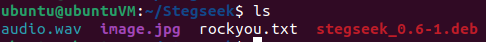
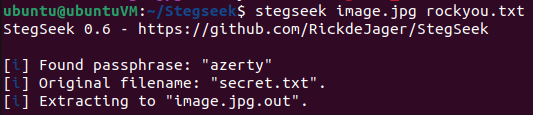
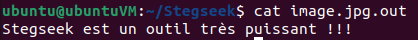
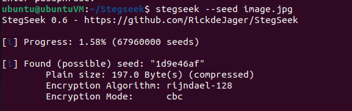
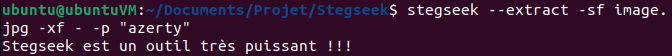

L'objectif de ce tutoriel est de vous présenter l'outil Stegseek.
Stegseek est un cracker steghide utilisé pour extraire des données cachées des fichiers.
2. Configuration
Ce tutoriel met à disposition, par le biais de Docker et Docker-compose, une machine déjà configurée.
Récupérez le dockerfile dans le lien suivant :
docker-compose.yml
Dans un bash (Linux) ou cmd (Windows), allez dans le répertoire où vous avez téléchargé le fichier docker-compose.yml et effectuez les commandes suivantes :
docker-compose build docker-compose up -d
Vous disposez maintenant d'une machine avec l'outil Stegseek.
Si vous voulez l'installer par vous-même, il est téléchargeable depuis github : Stegseek.
3. Installation et Application
Plusieurs fichiers Steghide (images, sons) seront mis à disposition pour la manipulation de l'outil.
Si vous voulez créer vous-même des fichiers steghide, je vous invite à vous diriger vers la présentation et le tutoriel de cet outil intéressant.
Téléchargeable depuis github : Steghide.
Connectez-vous à la machine :
docker exec -ti tuto_052-syd-academy-stegseek /bin/bash
et exécutez la commande suivante : apt install ./stegseek_0.6-1.deb
Dans un premier temps, on liste le contenu du répertoire suivant pour visualiser les fichiers sur lesquels nous allons travailler:
bash> ls

Ce répetoire comprend :
2 fichiers steghide (image + son)
fichier d'installation de stegseek
fichier rockyou.txt, une wordlist contenant plus de 14 millions de mots de passe communs
3.1 Manipulation 1
Nous travaillons tout d'abord avec le fichier image.jpg.
Stegseek permet de bruteforcer les mots de passe protégeant les fichiers steghides.
Nous nous appuyerons sur la liste rockyou.txt livrée avec la machine.
Pour ce faire, voici la syntaxe de la commande à effectuer :
bash> stegseek [fichier_steghide] [worldlist]

Cette commande permet de :
trouver et afficher le mot de passe utilisé pour protéger le fichier steghide passé en paramètre
déterminer de quel fichier secret provienne les données confidentielles cachées dans le fichier steghide
extraire ces données confidentielles dans un autre fichier de type .jpg.out
Comme nous pouvons le constater, le mot de passe a été trouvé et le fichier a été extrait.
Pour afficher les données confidentielles, utilisez la commande suivante : bash> cat [fichier_steghide.out]

3.2 Manipulation 2
Cette fois-ci, essayons de récupérer les données cachées dans le fichier audio audio.mp3. Indice : Utilisez le même procédé vu lors de la 1ère manipulation.
3.3 Manipulation 3
Nous allons de nouveau utiliser le fichier image.jgp.
Nous voulons obtenir d'autres informations concernant ce fichier.
Pour ce faire, voici la syntaxe de la commande à effectuer :
bash> stegseek --seed [fichier_steghide]

Cette commande permet de:
détecter si le fichier passé en paramètre contient réellement du contenu steghide
indiquer la quantité de contenu caché
indiquer comment le contenu a été crypté
Parfois, certains fichiers peuvent contenir des flags (masqués à l'aide d'un mot de passe aléatoire sécurisé mais sans un cryptage actif).
3.4 Manipulation 4
Dans cette manipulation, vous êtes en contact avec un ami et vous vous envoyez des fichiers contenant des messages cachés.
Ainsi, vous connaissez parfaitement le mot de passe (faisant office de clé unique) pour pouvoir déchiffrer ces fichiers.
Steghide permet aussi de pouvoir extraire et afficher directement les données cachées avec la commande suivante :
stegseek --extract -sf [nom_fichier_steghide] -xf - -p "[clé_unique]"

Vidéo : Tutoriel
Fin du tutoriel
Le tutoriel est terminé, et vous savez maintenant comment manipuler Stegseek.
Pour valider ce tutoriel, il vous suffira de rentrer le message secret du fichier audio (cf Manipulation 2).